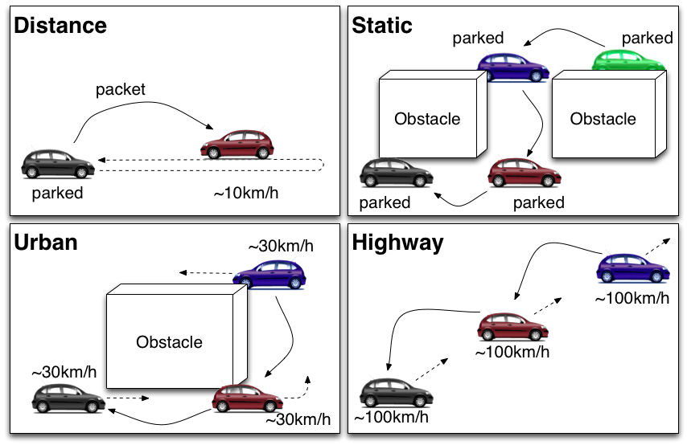

Experiment Scenarios
We evaluate the network performance using the outdoor vehicular platform.
GPS is used to dynamically get vehicle position information and a network sniffer is used to retrieve packet information and paths.
Real field evaluation is performed with the the following equipments with a test fleet of four conventional vehicles (Citroën C3 shown in the following figure).
A set of scenarios were considered taking into account several road parameters and con- straints to render the scenario as realistic as possible. The main factors which determine these scenarios are:
- Mobility:
- Vehicle mobility is a key issue to cope with realistic VANET conditions. This way, we have considered static scenarios, to test the network operation in a controlled way, but also dynamic scenarios under common traffic situations. Of course, field operational tests should be conducted to confirm the experimental results taking into account proper handling of mobility, i.e. Doppler shifting, fast fading, etc.
- Environment:
- Urban and interurban environment affects communication performance, because the signal propagation is hidden by buildings (among other elements), and the line of sight between vehicles is not always possible. Two environments are considered in our tests: a semi-urban one located at INRIA-Rocquencourt, which contains a set of small buildings surrounded by streets, and a highway stretch, the A-12 autoway, near INRIA-Rocquencourt. The tests are performed in the 2.4 GHz radio band due to lack of available hardware in the 5.9GHz radio band (IEEE802.11p). Also, the results are affected by the type of antenna. Field operational tests should thus be performed in the 5.9 GHz frequency band and with antenna diversity.
- Number of vehicles:
- The number of hops between the source and the destination vehicles affect the communication delay, as it was expected. In addition to the extra forwarding delay, the packet loss at MAC level also increases due to transmission in- terferences. Up to three vehicles are considered in the field trials, in order to check the increase of communication delay with the number of hops.
As summarized in the follwoing figure, testing scenarios have been divided into urban and highway; mobility has been set to static, urban-like speed, and high speed; and a wide range of perfor- mance metrics have been used, such as bandwidth, RTT , jitter and PDR. The traffic types (UDP, TCP and ICMPv6) have been applied over each defined scenario.

- Distance test
- The distance test is performed with two vehicles as shown in the above figure. In the beginning of the test, both vehicles locate at same points. Then, one vehicle does not move at the point and the other vehicle leaves straight from the point during the communication between them with slow speed (up to 10 Km/h). At some point the packet between them are dropped because of wireless radio range limitation, then the moving vehicle return to the first place. When the vehicle comes back, the packets are transferred again in the wireless radio range.
There is no obstacle between vehicles and the aim of this scenario was to check the maximum distance the wireless range can reach.
- Static Test
- As shown in the above figure, Static test is performed with three or four vehicles. All of them are parked at the place during the test and they are connected with multi-hop manner because the buildings block the direct communication between source and destination vehicles. This test brings the network performance result of two hops and three hops away because the network topology of the vehicles are stable and there are no route changes during the test.
- Urban Test
- As shown in the above figure, Urban test is performed with three or four vehicles that are moving slowly (up to 30 Km/h). The buildings or the other obstacles block wireless radio access between vehicles frequently. Because of the dynamic environment, the topology of the vehicle network is changed frequently. The aim of the test is to measure the network performance with the dynamic topology change and evaluate the effect of the obstacle that block the wireless radio between vehicles.
- Highway Test
- As shown in the above figure, Highway test is performed with three vehicles. The vehicles run on a highway during the UDP, TCP or ICMPv6 communication is established between vehicles. The speed is up to 100 km/h. The distance is dynamically varying due to road traffic conditions. However building will not block the wireless radio frequently.
OLSRv6 Experiments (2008)
GeoNet Project Experiments (2010)
CarGeo6 Project Experiments (2011)
{kind=link}
{kind=link}
{kind=link}